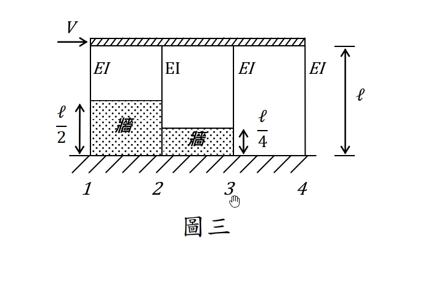

考題編號：SD-2017-3
主分類： SD-U1-3 單自由度、多自由度系統之動態分析及應用
副分類： SD-U2-2 建築耐震設計規範
分析方法： 概念題（含計算）
標籤： 剛性梁 剛性牆 短柱效應 有效柱高 剛度分配 水平剪力 固定固定柱 側移剛度
1. 原始題目重述 (Problem Restatement)
題目條件
結構如圖三，令牆及梁均為剛性（Rigid），試求編號 1、2、3、4 柱子所受的剪力。
結構描述：
- 水平力 $V$（→ 方向）作用於剛性頂梁
- 4 根柱子（由左至右編號 1、2、3、4），各柱 EI 相同
- 剛性牆（infill wall）產生「短柱效應」，改變各柱的有效高度（清淨高度）
-
各柱有效高度依圖三：
-
柱 1：$h_1 = \ell/2$（受左側剛性牆約束）
- 柱 2：$h_2 = \ell/2$（受同一剛性牆約束）
- 柱 3：$h_3 = \ell/4$（受較高剛性牆約束，清淨高僅 $\ell/4$）
- 柱 4：$h_4 = \ell$（無剛性牆，全高自由）
邊界條件：
- 柱底： 固定端（fixed base）
- 柱頂： 固定端（rigid beam → 節點無旋轉）
- → 所有柱均為兩端固定（fixed-fixed）

圖說：水平力 V 作用於剛性頂梁；4 柱均有相同 EI，柱底固定端。剛性牆（infill wall）造成「短柱效應」：柱 1、2 有效高度 ℓ/2，柱 3 有效高度 ℓ/4，柱 4 有效高度 ℓ。剛性頂梁確保各柱頂固定端條件（無旋轉）。
2. 考題核心精神與出題者意圖 (Core Concepts & Examiner's Intent)
核心觀念
- 短柱效應（Short Column Effect）： 剛性牆縮短柱的有效高度，使柱剛度大幅增加（$k \propto 1/h^3$），承受更大比例的側向剪力
- 剛度分配法： 剛性頂梁（rigid diaphragm）使各柱具有相同的側向位移 $\Delta$，各柱剪力按剛度比例分配
- 固定端柱側移剛度： $k = 12EI/h^3$（兩端固定）
出題者意圖
- 測驗考生對「剛性牆 → 短柱效應 → 有效高度縮短 → 剛度大增」的認識
- 測驗剛度分配法的應用（rigid diaphragm 前提下）
- 隱含考點：短柱吸收過大剪力是地震脆性破壞的主因（耐震設計的重要課題）
3. 解題戰略地圖與陷阱分析 (Strategic Roadmap & Trap Analysis)
步驟作戰計畫
Step 1: 判斷各柱有效高度（依剛性牆位置）
Step 2: 計算各柱側移剛度 k_i = 12EI/h_i³
Step 3: 計算總剛度 K = Σk_i
Step 4: 各柱剪力 V_i = (k_i/K)×V
Step 5: 驗算 ΣV_i = V
關鍵陷阱
| # | 陷阱 | 錯誤做法 | 正確做法 |
|---|---|---|---|
| 1 | 忽略短柱效應 | 用全高 ℓ 計算所有柱的剛度 | 依圖三判斷各柱有效高度（ℓ/2、ℓ/2、ℓ/4、ℓ） |
| 2 | 邊界條件錯誤 | 用固定端–自由端公式 $k=3EI/h^3$ | 剛性頂梁 → 柱頂固定，用 $k=12EI/h^3$ |
| 3 | 剪力分配忘記用比值 | 直接以 $12EI/h_i^3 \times \Delta$ 但不除以總剛度 | 先計算 $K_{total}$，再按比例分配 |
| 4 | 短柱剛度計算錯誤 | $k_3 = 12EI/(ℓ/4) = 48EI/ℓ$（忘記三次方） | $k_3 = 12EI/(ℓ/4)^3 = 768EI/\ell^3$ |
3.5 變數層次分析 (Variable Hierarchy Analysis)
複習提示：第一次解題後，在每個卡住的知識點旁標記
⚠；第二次複習時只看有⚠的項目。
最終目標
求各柱剪力 V₁、V₂、V₃、V₄（以 V 和已知幾何量表示）
本題關鍵公式（依計算順序）
$\boxed{\cdot}$ = 由前步驟推導出的中間變數
$$\text{Step 1: 各柱側移剛度（兩端固定）}$$
$$k_i = \frac{12EI}{h_i^3}$$
$$\text{Step 2: 各柱具體剛度}$$
$$k_1 = k_2 = \frac{12EI}{(\ell/2)^3} = \frac{96EI}{\ell^3}, \quad k_3 = \frac{12EI}{(\ell/4)^3} = \frac{768EI}{\ell^3}, \quad k_4 = \frac{12EI}{\ell^3}$$
$$\text{Step 3: 總剛度}$$
$$K = k_1+k_2+k_3+k_4 = \frac{(96+96+768+12)EI}{\ell^3} = \frac{972EI}{\ell^3}$$
$$\text{Step 4: 各柱剪力（剛度分配）}$$
$$V_i = \frac{\boxed{k_i}}{\boxed{K}}\cdot V$$
L1：題目直接給定
| 符號 | 數值 | 說明 |
|---|---|---|
| $V$ | 已知 | 水平施力 |
| $EI$ | 已知（4柱相同） | 各柱抗彎勁度 |
| $h_1 = h_2$ | $\ell/2$ | 柱1、2有效高度（由圖三讀取） |
| $h_3$ | $\ell/4$ | 柱3有效高度（由圖三讀取） |
| $h_4$ | $\ell$ | 柱4有效高度（無牆，全高） |
L2：需知識點推導
Step 1：各柱側移剛度
| 符號 | 公式/來源 | 卡關? |
|---|---|---|
| $k_i$ | $12EI/h_i^3$（兩端固定柱側移剛度） | |
| $k_1$ | $12EI/(\ell/2)^3 = 12 \times 8 \times EI/\ell^3 = 96EI/\ell^3$ | |
| $k_2$ | 同 $k_1 = 96EI/\ell^3$ | |
| $k_3$ | $12EI/(\ell/4)^3 = 12 \times 64 \times EI/\ell^3 = 768EI/\ell^3$ | |
| $k_4$ | $12EI/\ell^3$ |
Step 2：剛度分配
| 符號 | 公式/來源 | 卡關? |
|---|---|---|
| $K_{total}$ | $\sum k_i = (96+96+768+12)EI/\ell^3 = 972EI/\ell^3$ | |
| $V_i$ | $(k_i/K_{total})\times V$ |
L3：深層知識（不懂就卡住）
| 知識點 | 說明 | 卡關? |
|---|---|---|
| 兩端固定柱側移剛度公式 | $k=12EI/h^3$（固定固定）vs. $k=3EI/h^3$（固定自由）；差異4倍 | |
| 高度三次方的放大效應 | $h$ 減半 → $k$ 增加 $2^3=8$ 倍；$h$ 縮為 1/4 → $k$ 增加 $4^3=64$ 倍 | |
| 剛性梁（rigid diaphragm）的意義 | 同一層各柱頂有相同水平位移 $\Delta$，故剪力可按剛度比例分配 | |
| 短柱效應的耐震意義 | 短柱吸收過大剪力且剛度突變，地震時易脆性破壞（剪力破壞先於撓曲破壞） |
4. 步驟化詳細計算過程 (Step-by-Step Detailed Calculation)
Step 1：確認各柱有效高度
依圖三，剛性牆（rigid infill wall）造成短柱效應：
| 柱號 | 有效高度 $h_i$ | 說明 |
|---|---|---|
| 柱 1 | $\ell/2$ | 左側剛性牆將柱底固定點提升至 $\ell/2$，清淨高 = $\ell - \ell/2 = \ell/2$ |
| 柱 2 | $\ell/2$ | 同一剛性牆影響，清淨高 = $\ell/2$ |
| 柱 3 | $\ell/4$ | 中間剛性牆更高，清淨高僅 $\ell/4$（牆高 = $3\ell/4$） |
| 柱 4 | $\ell$ | 無剛性牆，全高自由 |
邊界條件：
- 剛性頂梁 → 柱頂固定（無旋轉）
- 剛性牆頂或基礎 → 柱底固定（無旋轉、無位移）
- 各柱均為兩端固定（fixed-fixed）
Step 2：計算各柱側移剛度
兩端固定柱的側移剛度（抗側力剛度）：
$$k = \frac{12EI}{h^3}$$
代入各柱有效高度：
$$k_1 = \frac{12EI}{(\ell/2)^3} = \frac{12EI}{\ell^3/8} = \frac{96EI}{\ell^3}$$
$$k_2 = \frac{12EI}{(\ell/2)^3} = \frac{96EI}{\ell^3}$$
$$k_3 = \frac{12EI}{(\ell/4)^3} = \frac{12EI}{\ell^3/64} = \frac{768EI}{\ell^3}$$
$$k_4 = \frac{12EI}{\ell^3}$$
策略註解： 柱高縮短對剛度的影響呈三次方關係。柱 3 高度為柱 4 的 1/4，剛度為柱 4 的 $4^3 = 64$ 倍，是本題剪力分配的主角。
Step 3：計算總剛度
$$K_{total} = k_1 + k_2 + k_3 + k_4 = \frac{EI}{\ell^3}(96 + 96 + 768 + 12) = \frac{972\,EI}{\ell^3}$$
Step 4：剪力分配
由剛性頂梁確保各柱頂有相同側移 $\Delta$，各柱剪力：
$$V_i = \frac{k_i}{K_{total}}\cdot V$$
柱 1： $$V_1 = \frac{96}{972}\cdot V = \frac{8}{81}\,V$$
柱 2： $$V_2 = \frac{96}{972}\cdot V = \frac{8}{81}\,V$$
柱 3： $$V_3 = \frac{768}{972}\cdot V = \frac{64}{81}\,V$$
柱 4： $$V_4 = \frac{12}{972}\cdot V = \frac{1}{81}\,V$$
Step 5：驗算
$$V_1 + V_2 + V_3 + V_4 = \frac{8+8+64+1}{81}\cdot V = \frac{81}{81}\cdot V = V \quad \checkmark$$
最終答案
$$\boxed{V_1 = \frac{8}{81}V, \quad V_2 = \frac{8}{81}V, \quad V_3 = \frac{64}{81}V, \quad V_4 = \frac{1}{81}V}$$
5. 關鍵爭議點與進階探討 (Critical Issues & Advanced Discussion)
5.1 短柱效應的耐震危害
本題的計算結果揭示：柱 3（最短）承受總剪力的 64/81 ≈ 79%，而柱 4（最高）僅承受 1/81 ≈ 1.2%。
這正是「短柱效應」造成耐震危害的根源：
- 剛性牆（如磚牆）若僅填充部分高度，會造成相鄰柱的有效高度大幅縮短
- 短柱因承受過大剪力，在地震時容易發生剪力脆性破壞（而非延性撓曲破壞）
- 此為台灣地震後常見的典型破壞模式
5.2 邊界條件的影響
若柱頂非固定（例如頂梁並非完全剛性），則應使用固定–自由（cantilever）剛度：
$$k = \frac{3EI}{h^3}$$
此時各柱剛度比值不變（仍為 96:96:768:12），剪力分配結果不變。 但本題題目明確指出梁為剛性，故使用 $12EI/h^3$（固定–固定）。
5.3 實務建議：避免短柱設計
台灣建築耐震設計規範規定，如有填充牆（infill wall）與柱共同作用，應考慮短柱效應的剪力增大，並加強柱子的圍束箍筋（confinement ties），以防止地震中發生脆性剪力破壞。